Qualitative Results
Real-World Scene
We present some additional prediction results of our method in real-world scenarios.
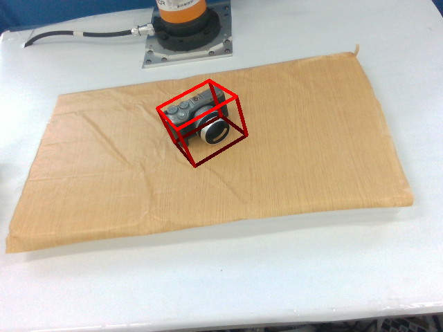
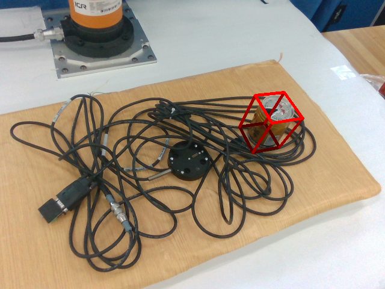
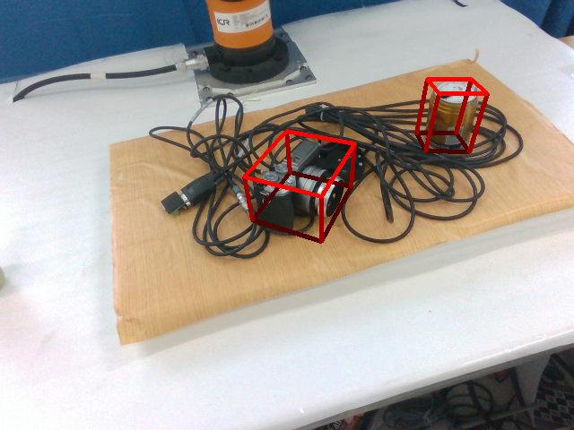
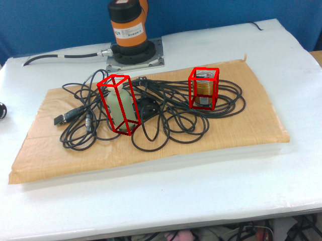
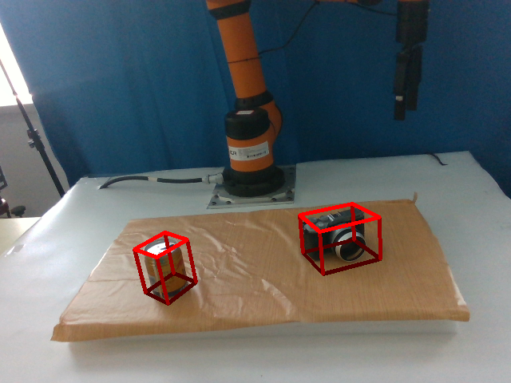
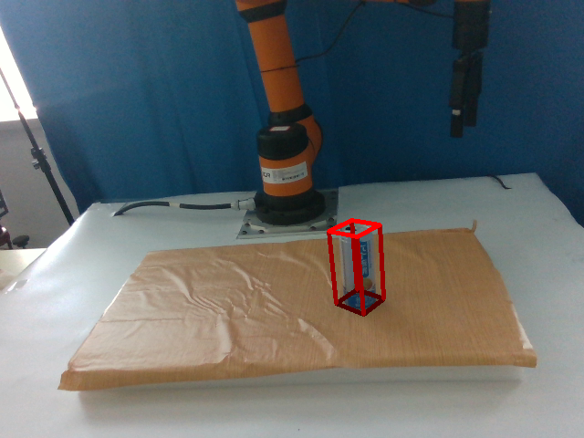
Results on Wild6D
We present some additional prediction results of our method on Wild6D dataset.
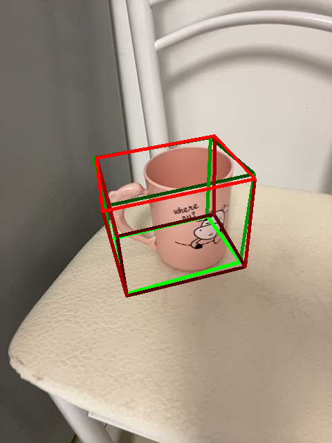
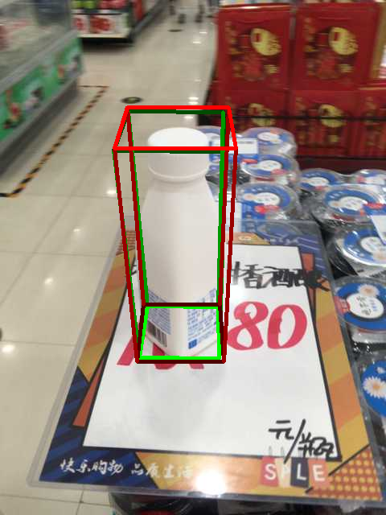
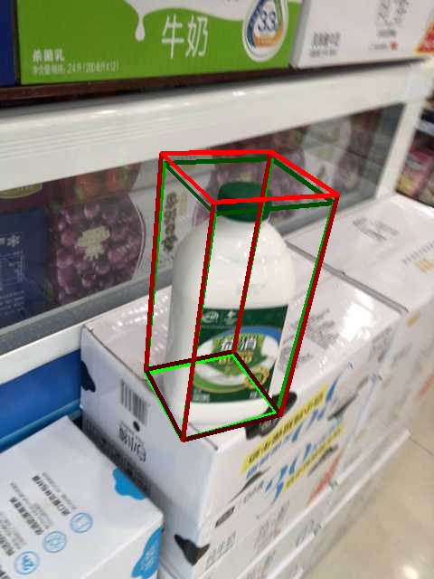
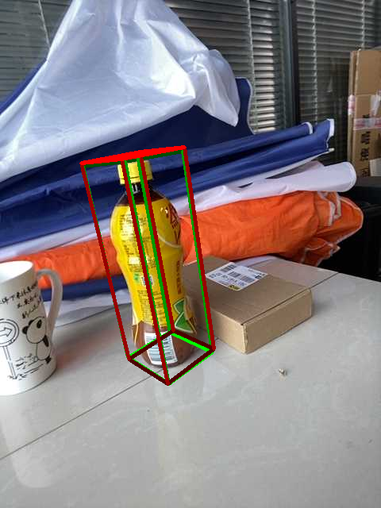

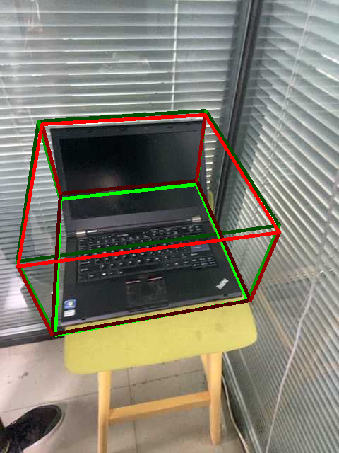